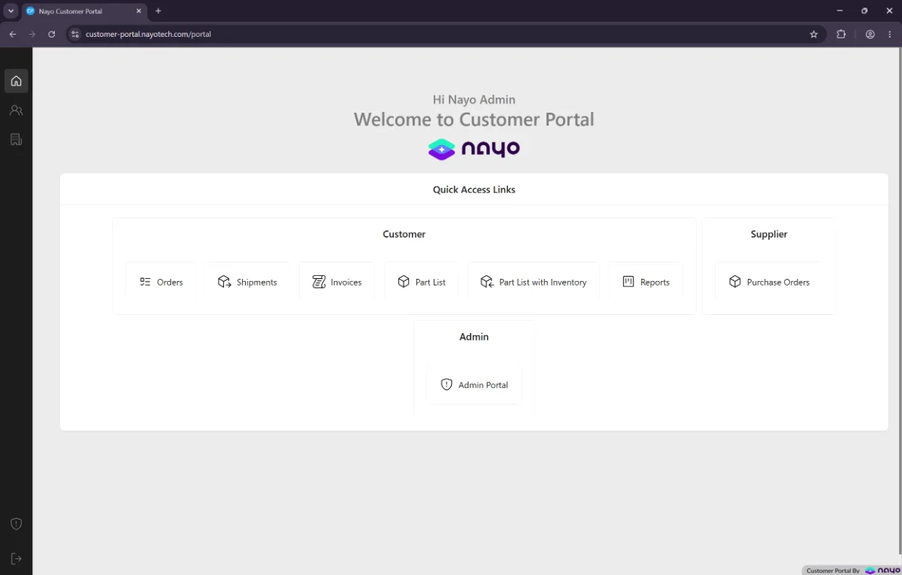
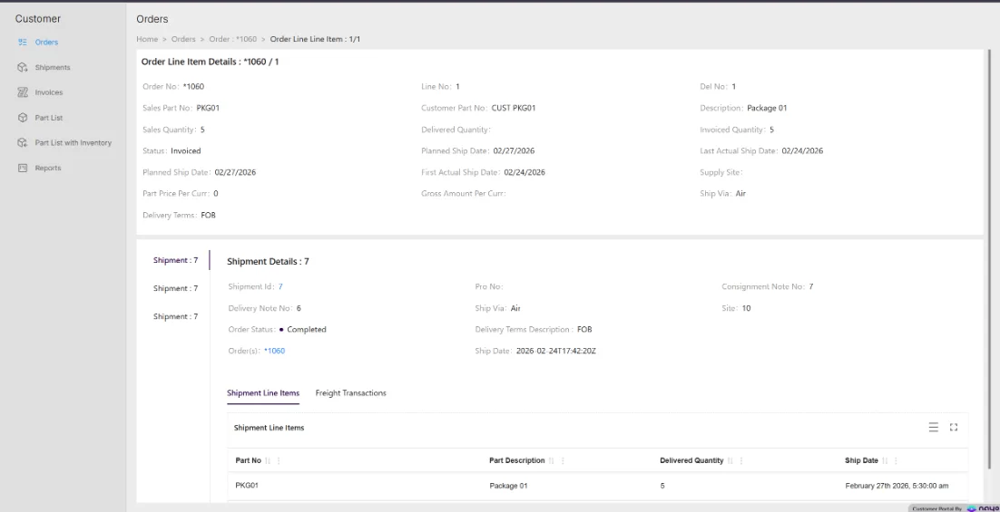
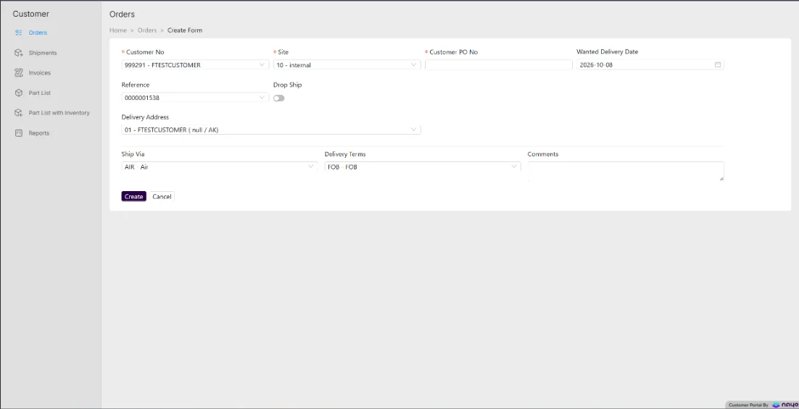
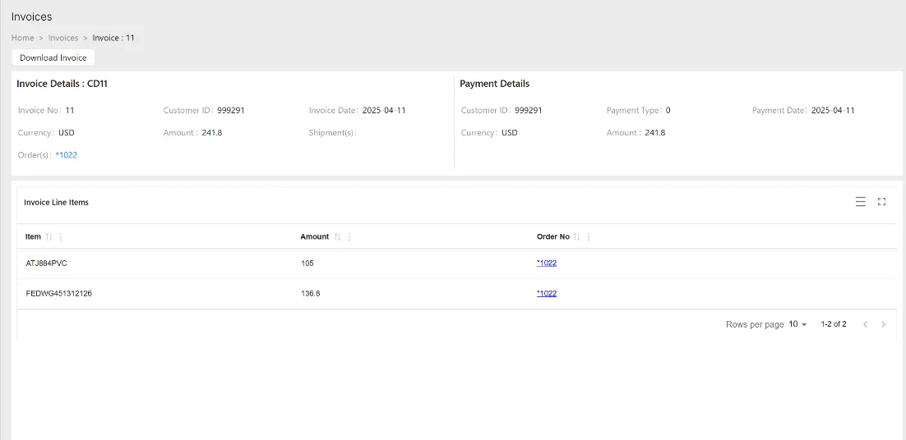
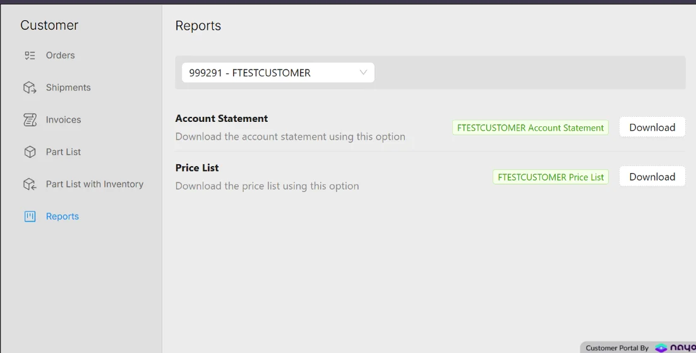
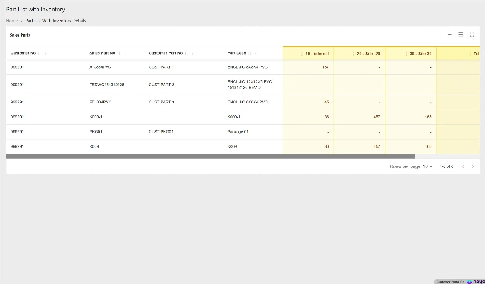
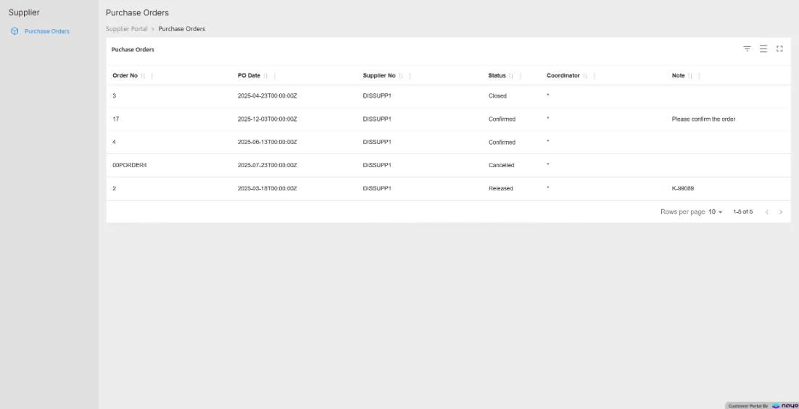
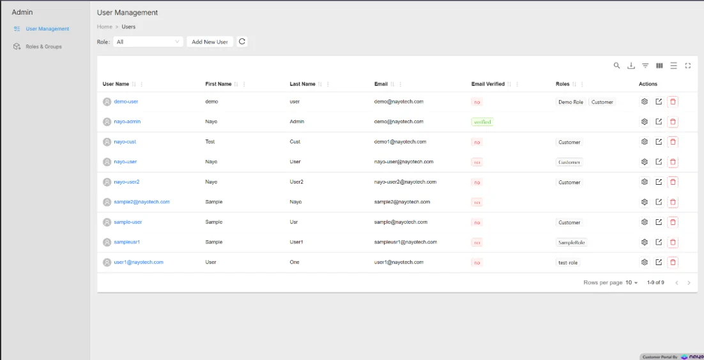

Fewer calls and emails
Partners answer their own questions.
A B2B portal for IFS
Nayo Customer Portal connects customers, suppliers and dealers to the orders, shipments, invoices and parts already in IFS — in real time, without IFS user licences.

The challenge
So the day-to-day runs on email and phone calls. Where is my order? Has it shipped? Can you resend that invoice? Every question costs your team time.
Giving partners access sounds simple — until you remember they sit outside your IFS user framework, and each one must see only their own data.
See how it works
Features
01 · Feature
Customers see every order and its status, filter and search by any column, and drill from order to line to shipment on one page. Shipment lines and freight transactions show tracking, weight and freight charges.


02 · Feature
Customers place orders themselves, with standard IFS part availability checks. Portal orders arrive in IFS as order type WEB, with a status that shows when entry is complete.
03 · Feature
View the invoices raised in IFS, open any invoice for full details, and download the invoice document on demand — the same document your finance team would send.


04 · Feature
Preview and print IFS reports straight from the portal — such as a customer statement of account and price lists. Configurable, so you can surface the reports your customers ask for.
05 · Feature
Each customer sees their own sales parts and prices, drawn from their IFS agreements and price lists — plus available quantities by site, so they can check stock before they order.


06 · Feature
Suppliers see the purchase orders raised for them in IFS, with part and no-part lines. A two-way supplier note keeps the conversation attached to the order.
07 · Feature
Build roles from permission sets, manage users and credentials, and map each user to their IFS customer or supplier. Coordinators can be mapped to several customers at once.

Benefits
Partners answer their own questions.
Straight from IFS, never an out-of-date export.
Portal users sit outside the IFS user framework.
Every user sees only their own data.
How it works
Link the portal to your IFS environment.
Set up roles, permissions and customer or supplier mapping.
Partners log in and see their own data, live.
Book a demo and we'll walk you through it with your own IFS data.